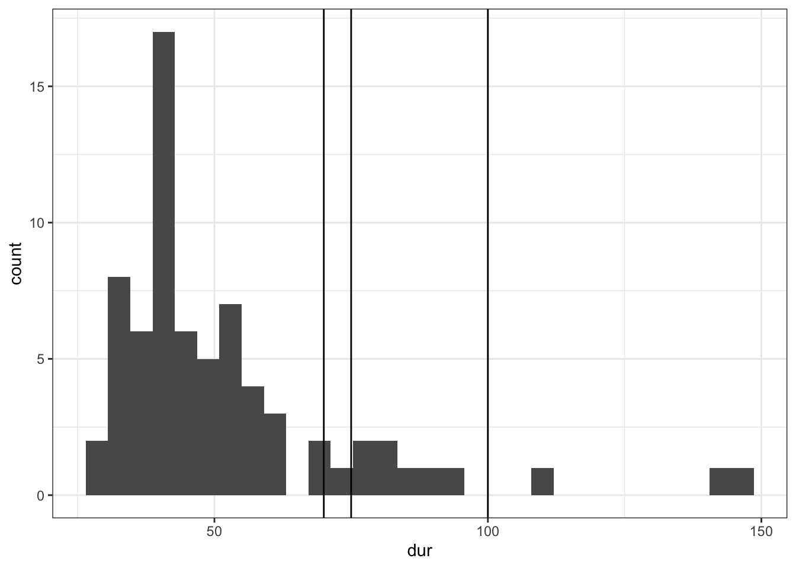
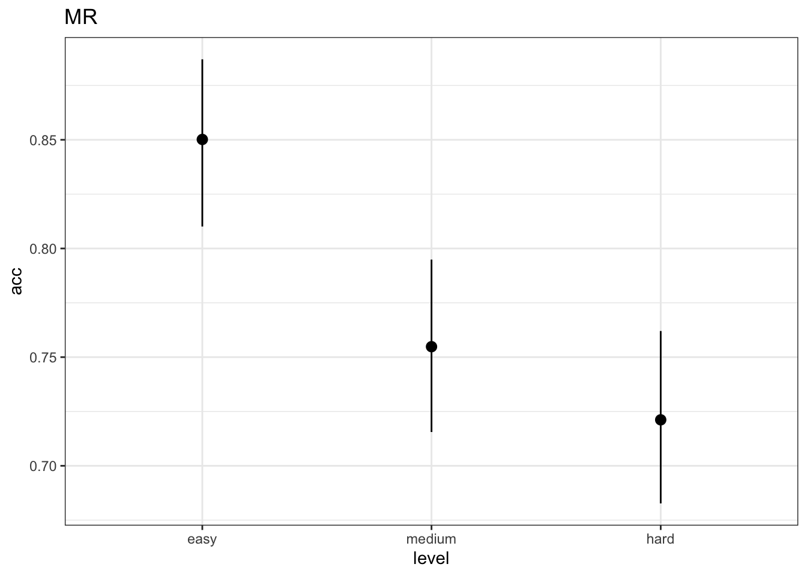
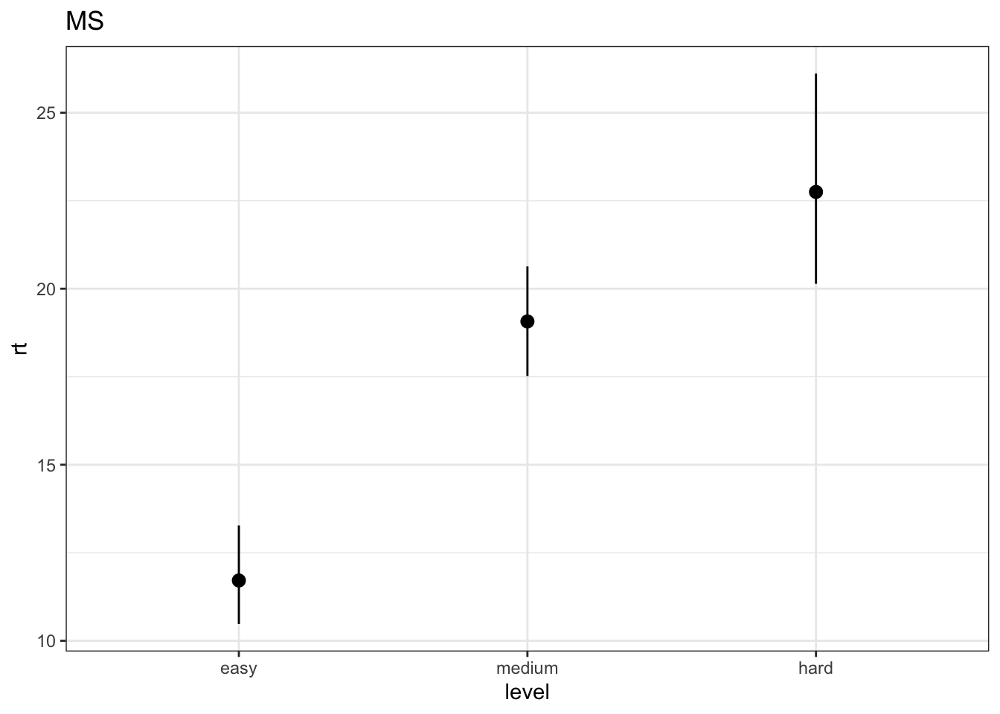
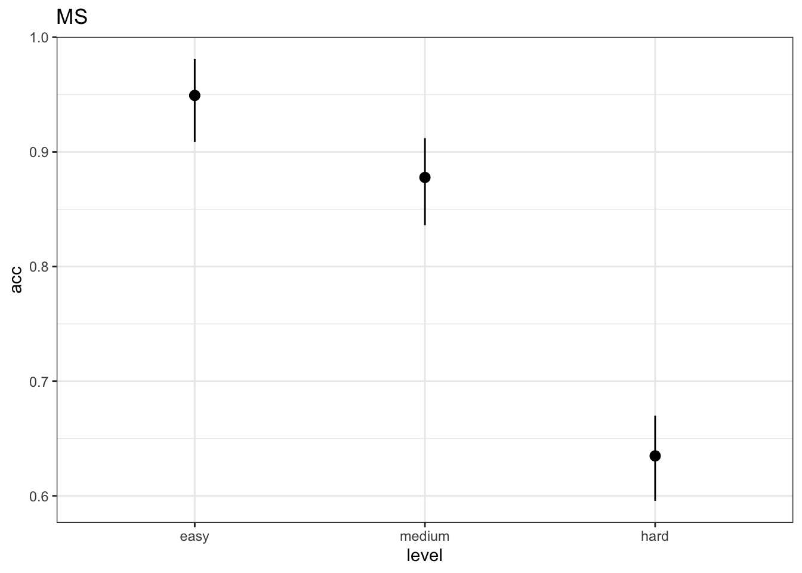

knitr::opts_chunk$set(error = TRUE)First banch. Analysis workflow
Packages
library(tidyverse)── Attaching core tidyverse packages ──────────────────────── tidyverse 2.0.0 ──
✔ dplyr 1.1.2 ✔ readr 2.1.4
✔ forcats 1.0.0 ✔ stringr 1.5.0
✔ ggplot2 3.4.2 ✔ tibble 3.2.1
✔ lubridate 1.9.2 ✔ tidyr 1.3.0
✔ purrr 1.0.1
── Conflicts ────────────────────────────────────────── tidyverse_conflicts() ──
✖ dplyr::filter() masks stats::filter()
✖ dplyr::lag() masks stats::lag()
ℹ Use the conflicted package (<http://conflicted.r-lib.org/>) to force all conflicts to become errorstheme_set(theme_bw()) # set black and white theme
library(lavaan)This is lavaan 0.6-15
lavaan is FREE software! Please report any bugs.library(tidySEM)Loading required package: OpenMx
OpenMx may run faster if it is compiled to take advantage of multiple cores.
Registered S3 method overwritten by 'tidySEM':
method from
predict.MxModel OpenMxlibrary(semPower)
### Welcome to semPower 2.0.1 ###
See https://github.com/moshagen/semPower for quick examples.
See https://moshagen.github.io/semPower/ for a detailed manual.
Please cite as:
Moshagen, M., & Erdfelder, E. (2016). A new strategy for testing structural equation models.
Structural Equation Modeling, 23, 54-60. doi: 10.1080/10705511.2014.950896library(lme4)Loading required package: Matrix
Attaching package: 'Matrix'
The following objects are masked from 'package:OpenMx':
%&%, expm
The following objects are masked from 'package:tidyr':
expand, pack, unpacklibrary(lmerTest)
Attaching package: 'lmerTest'
The following object is masked from 'package:lme4':
lmer
The following object is masked from 'package:stats':
steplibrary(MuMIn)
library(pwr)rm(list = ls())Reading data
MR_data <- read_csv("MR_firstbanch_data.csv")Rows: 3744 Columns: 10
── Column specification ────────────────────────────────────────────────────────
Delimiter: ","
chr (7): correctAns, base_pic, rotated_pic, key, task, level, id
dbl (3): is_correct, rt, trial
ℹ Use `spec()` to retrieve the full column specification for this data.
ℹ Specify the column types or set `show_col_types = FALSE` to quiet this message.ST_data <- read_csv("ST_firstbanch_data.csv")Rows: 3744 Columns: 8
── Column specification ────────────────────────────────────────────────────────
Delimiter: ","
chr (4): key, task, level, id
dbl (4): target_present, is_correct, rt, trial
ℹ Use `spec()` to retrieve the full column specification for this data.
ℹ Specify the column types or set `show_col_types = FALSE` to quiet this message.MS_data <- read_csv("MS_firstbanch_data.csv")Rows: 3744 Columns: 7
── Column specification ────────────────────────────────────────────────────────
Delimiter: ","
chr (3): task, level, id
dbl (4): trials, n, rt, acc
ℹ Use `spec()` to retrieve the full column specification for this data.
ℹ Specify the column types or set `show_col_types = FALSE` to quiet this message.NASATLX_data <- read_csv("NASATLX_firstbanch_data.csv")Rows: 4212 Columns: 5
── Column specification ────────────────────────────────────────────────────────
Delimiter: ","
chr (4): scale, task, level, id
dbl (1): score
ℹ Use `spec()` to retrieve the full column specification for this data.
ℹ Specify the column types or set `show_col_types = FALSE` to quiet this message.SEQUENCE_data <- read_csv("SEQ_firstbanch_data.csv")Rows: 702 Columns: 4
── Column specification ────────────────────────────────────────────────────────
Delimiter: ","
chr (3): level, task, id
dbl (1): order
ℹ Use `spec()` to retrieve the full column specification for this data.
ℹ Specify the column types or set `show_col_types = FALSE` to quiet this message.EXPTIME <- read_csv("EXPTIME_firstbanch_data.csv")Rows: 78 Columns: 4
── Column specification ────────────────────────────────────────────────────────
Delimiter: ","
chr (1): id
dbl (1): dur
dttm (2): start, end
ℹ Use `spec()` to retrieve the full column specification for this data.
ℹ Specify the column types or set `show_col_types = FALSE` to quiet this message.Experimental time
EXPTIME |> ggplot(aes(dur)) +
geom_density()Warning: Removed 1 rows containing non-finite values (`stat_density()`).EXPTIME |>
filter(dur < 250) |>
ggplot(aes(dur)) +
# geom_density() +
geom_histogram() +
geom_vline(xintercept = 70) +
geom_vline(xintercept = 75) +
geom_vline(xintercept = 100)`stat_bin()` using `bins = 30`. Pick better value with `binwidth`.
EXPTIME |>
filter(dur < 250) |>
ggplot(aes(dur)) +
geom_boxplot() #geom_vline(xintercept = 93, linetype = "dashed")EXPTIME$dur |> min(na.rm = TRUE)[1] 28.23333quantile(EXPTIME$dur[EXPTIME$dur<250], .75, na.rm = TRUE) + 1.5 * IQR(EXPTIME$dur[EXPTIME$dur<250], na.rm = TRUE) 75%
82.375 Behavioral data
Mental Rotation
MR_data |>
group_by(id, level, task) |>
summarise(rt = mean(rt),
acc = mean(is_correct)) -> MR_data_agg`summarise()` has grouped output by 'id', 'level'. You can override using the
`.groups` argument.MR_data_agg |> write_csv("MR_firstbanch_data_agg.csv")MR_data_agg |>
group_by(level, task) |>
summarise(n = unique(id) |> length(),
mean = mean(rt),
sd = sd(rt),
min = min(rt),
max = max(rt),
CI_lower = mean - 1.96 * sd / sqrt(n),
CI_upper = mean + 1.96 * sd / sqrt(n))`summarise()` has grouped output by 'level'. You can override using the
`.groups` argument.# A tibble: 3 × 9
# Groups: level [3]
level task n mean sd min max CI_lower CI_upper
<chr> <chr> <int> <dbl> <dbl> <dbl> <dbl> <dbl> <dbl>
1 easy MR 78 7.11 4.56 1.43 25.5 6.10 8.12
2 hard MR 78 12.0 10.3 1.60 69.1 9.67 14.2
3 medium MR 78 8.79 5.88 1.10 37.1 7.49 10.1 MR_data_agg |>
mutate(level = factor(level,
ordered = TRUE,
levels = c("easy", "medium", "hard"))) |>
ggplot(aes(level, rt)) +
stat_summary(fun.data = mean_cl_boot, geom = "pointrange") +
labs(title = "MR")MR_data_agg |>
group_by(level, task) |>
summarise(n = unique(id) |> length(),
mean = mean(acc),
sd = sd(acc),
min = min(acc),
max = max(acc),
CI_lower = mean - 1.96 * sd / sqrt(n),
CI_upper = mean + 1.96 * sd / sqrt(n))`summarise()` has grouped output by 'level'. You can override using the
`.groups` argument.# A tibble: 3 × 9
# Groups: level [3]
level task n mean sd min max CI_lower CI_upper
<chr> <chr> <int> <dbl> <dbl> <dbl> <dbl> <dbl> <dbl>
1 easy MR 78 0.850 0.174 0.312 1 0.812 0.889
2 hard MR 78 0.721 0.178 0.312 1 0.682 0.761
3 medium MR 78 0.755 0.178 0.25 1 0.715 0.794MR_data_agg |>
mutate(level = factor(level,
ordered = TRUE,
levels = c("easy", "medium", "hard"))) |>
ggplot(aes(level, acc)) +
stat_summary(fun.data = mean_cl_boot, geom = "pointrange") +
labs(title = "MR")
Mental Span
MS_data |>
group_by(id, level, task) |>
summarise(rt = mean(rt),
acc = mean(acc)) -> MS_data_agg`summarise()` has grouped output by 'id', 'level'. You can override using the
`.groups` argument.MS_data_agg |> write_csv("MS_firstbanch_data_agg.csv")MS_data_agg |>
group_by(level, task) |>
summarise(n = unique(id) |> length(),
mean = mean(rt, na.rm = TRUE),
sd = sd(rt, na.rm = TRUE),
min = min(rt, na.rm = TRUE),
max = max(rt, na.rm = TRUE),
CI_lower = mean - 1.96 * sd / sqrt(n),
CI_upper = mean + 1.96 * sd / sqrt(n))`summarise()` has grouped output by 'level'. You can override using the
`.groups` argument.# A tibble: 3 × 9
# Groups: level [3]
level task n mean sd min max CI_lower CI_upper
<chr> <chr> <int> <dbl> <dbl> <dbl> <dbl> <dbl> <dbl>
1 easy MS 78 11.7 5.72 5.47 46.8 10.4 13.0
2 hard MS 78 22.7 11.8 11.2 91.0 20.1 25.4
3 medium MS 78 19.1 5.79 10.1 39.9 17.8 20.4MS_data_agg |>
mutate(level = factor(level,
ordered = TRUE,
levels = c("easy", "medium", "hard"))) |>
ggplot(aes(level, rt)) +
stat_summary(fun.data = mean_cl_boot, geom = "pointrange") +
labs(title = "MS")Warning: Removed 72 rows containing non-finite values (`stat_summary()`).
MS_data_agg |>
group_by(level, task) |>
summarise(n = unique(id) |> length(),
mean = mean(acc),
sd = sd(acc),
min = min(acc),
max = max(acc),
CI_lower = mean - 1.96 * sd / sqrt(n),
CI_upper = mean + 1.96 * sd / sqrt(n))`summarise()` has grouped output by 'level'. You can override using the
`.groups` argument.# A tibble: 3 × 9
# Groups: level [3]
level task n mean sd min max CI_lower CI_upper
<chr> <chr> <int> <dbl> <dbl> <dbl> <dbl> <dbl> <dbl>
1 easy MS 78 0.949 0.165 0 1 0.913 0.986
2 hard MS 78 0.635 0.168 0 0.973 0.597 0.672
3 medium MS 78 0.878 0.172 0 1 0.839 0.916MS_data_agg |>
mutate(level = factor(level,
ordered = TRUE,
levels = c("easy", "medium", "hard"))) |>
ggplot(aes(level, acc)) +
stat_summary(fun.data = mean_cl_boot, geom = "pointrange") +
labs(title = "MS")
Sternberg
ST_data |>
group_by(id, level, task) |>
summarise(rt = mean(rt),
acc = mean(is_correct)) -> ST_data_agg`summarise()` has grouped output by 'id', 'level'. You can override using the
`.groups` argument.ST_data_agg |> write_csv("ST_firstbanch_data_agg.csv")ST_data_agg |>
group_by(level, task) |>
summarise(n = unique(id) |> length(),
mean = mean(rt),
sd = sd(rt),
min = min(rt),
max = max(rt),
CI_lower = mean - 1.96 * sd / sqrt(n),
CI_upper = mean + 1.96 * sd / sqrt(n))`summarise()` has grouped output by 'level'. You can override using the
`.groups` argument.# A tibble: 3 × 9
# Groups: level [3]
level task n mean sd min max CI_lower CI_upper
<chr> <chr> <int> <dbl> <dbl> <dbl> <dbl> <dbl> <dbl>
1 easy ST 78 1.12 0.325 0.627 2.47 1.05 1.19
2 hard ST 78 1.44 0.441 0.737 3.52 1.34 1.54
3 medium ST 78 1.39 0.470 0.692 3.45 1.28 1.49ST_data_agg |>
mutate(level = factor(level,
ordered = TRUE,
levels = c("easy", "medium", "hard"))) |>
ggplot(aes(level, rt)) +
stat_summary(fun.data = mean_cl_boot, geom = "pointrange") +
labs(title = "ST")ST_data_agg |>
group_by(level, task) |>
summarise(n = unique(id) |> length(),
mean = mean(acc),
sd = sd(acc),
min = min(acc),
max = max(acc),
CI_lower = mean - 1.96 * sd / sqrt(n),
CI_upper = mean + 1.96 * sd / sqrt(n))`summarise()` has grouped output by 'level'. You can override using the
`.groups` argument.# A tibble: 3 × 9
# Groups: level [3]
level task n mean sd min max CI_lower CI_upper
<chr> <chr> <int> <dbl> <dbl> <dbl> <dbl> <dbl> <dbl>
1 easy ST 78 0.979 0.0358 0.875 1 0.971 0.987
2 hard ST 78 0.686 0.127 0.312 0.875 0.658 0.714
3 medium ST 78 0.836 0.114 0.562 1 0.811 0.861ST_data_agg |>
mutate(level = factor(level,
ordered = TRUE,
levels = c("easy", "medium", "hard"))) |>
ggplot(aes(level, acc)) +
stat_summary(fun.data = mean_cl_boot, geom = "pointrange") +
labs(title = "ST")Plot all paradigms
MR_data_agg |>
bind_rows(MS_data_agg, ST_data_agg) |>
mutate(level = factor(level,
ordered = TRUE,
levels = c("easy", "medium", "hard"))) |>
ggplot(aes(level, rt)) +
facet_wrap(~ task, scales = "free_y") +
stat_summary(fun.data = mean_cl_boot, geom = "pointrange") +
labs(title = "Reaction Time")Warning: Removed 72 rows containing non-finite values (`stat_summary()`).MR_data_agg |>
bind_rows(MS_data_agg, ST_data_agg) |>
mutate(level = factor(level,
ordered = TRUE,
levels = c("easy", "medium", "hard"))) |>
ggplot(aes(level, acc)) +
facet_wrap(~ task, scales = "free_y") +
stat_summary(fun.data = mean_cl_boot, geom = "pointrange") +
labs(title = "Accuracy")NASA-TLX
NASATLX_data |>
# fix factor
mutate(
level = factor(
level,
levels = c("easy", "medium", "hard"),
ordered = TRUE
),
# modify vars to match with previously created encoding
scl = str_to_lower(scale),
tsk = str_to_lower(task),
lvl = str_sub(level, start = 1, end = 1) |> str_to_upper(),
score = score * 5
) |>
# create a new var for CFA
unite(item, scl, tsk, lvl) -> NASATLX_datalevel_colors <- c("#4bd752", "#d7984b", "#d7524b")
task_colors <- c("red4", "green4", "blue4")
back_histogram_color <- "gray60"NASATLX_data |>
ggplot(aes(scale, score, fill = level)) +
geom_boxplot() +
facet_grid(task ~ .) +
theme(legend.position = "bottom") +
labs(x = "NASA-TLX Scale",
y = "NASA-TLX Score (raw)",
fill = "Difficulty Level") +
scale_fill_manual(values = level_colors)Warning: Removed 17 rows containing non-finite values (`stat_boxplot()`).pd <- position_dodge(0.3)
NASATLX_data |>
ggplot(aes(scale, score, color = level)) +
stat_summary(fun.data = mean_cl_boot, geom = "errorbar",
position = pd, width = .3) +
stat_summary(fun = mean, geom = "point",
position = pd) +
facet_grid(task ~ .) +
theme(legend.position = "bottom") +
labs(x = "NASA-TLX Scale",
y = "NASA-TLX Score (raw)",
fill = "Difficulty Level") +
scale_color_manual(values = level_colors)Warning: Removed 17 rows containing non-finite values (`stat_summary()`).
Removed 17 rows containing non-finite values (`stat_summary()`).GLMM scales
NASATLX_data |>
select(-item) |>
# mutate(row_nubmer = row_number()) |>
pivot_wider(values_from = score, names_from = scale) -> nasa_tlx_wide
# NASA_TLX |> group_by(task, level) |> summarise(n=n())
# nasa_tlx_wide |> group_by(task, level) |> summarise(n=n())r2tof2 <- function(r2) r2 / (1 - r2)ME
mix_ME <- lmer(ME ~ task * level + (1|id),
nasa_tlx_wide,
contrasts = list(level="contr.treatment"))
summary(mix_ME)Linear mixed model fit by REML. t-tests use Satterthwaite's method [
lmerModLmerTest]
Formula: ME ~ task * level + (1 | id)
Data: nasa_tlx_wide
REML criterion at convergence: 6090.6
Scaled residuals:
Min 1Q Median 3Q Max
-3.1846 -0.5810 0.0514 0.6403 3.1496
Random effects:
Groups Name Variance Std.Dev.
id (Intercept) 172.8 13.14
Residual 300.2 17.33
Number of obs: 701, groups: id, 78
Fixed effects:
Estimate Std. Error df t value Pr(>|t|)
(Intercept) 46.445 2.463 335.008 18.861 < 2e-16 ***
taskMS -16.813 2.774 615.020 -6.060 2.37e-09 ***
taskST -18.655 2.774 615.020 -6.724 4.05e-11 ***
levelmedium 10.951 2.774 615.020 3.947 8.82e-05 ***
levelhard 19.777 2.774 615.020 7.128 2.86e-12 ***
taskMS:levelmedium 20.000 3.924 615.020 5.097 4.59e-07 ***
taskST:levelmedium 14.677 3.924 615.020 3.741 0.000201 ***
taskMS:levelhard 27.488 3.924 615.020 7.006 6.47e-12 ***
taskST:levelhard 20.282 3.931 615.107 5.160 3.34e-07 ***
---
Signif. codes: 0 '***' 0.001 '**' 0.01 '*' 0.05 '.' 0.1 ' ' 1
Correlation of Fixed Effects:
(Intr) taskMS taskST lvlmdm lvlhrd tskMS:lvlm tskST:lvlm tskMS:lvlh
taskMS -0.563
taskST -0.563 0.500
levelmedium -0.563 0.500 0.500
levelhard -0.563 0.500 0.500 0.500
tskMS:lvlmd 0.398 -0.707 -0.354 -0.707 -0.354
tskST:lvlmd 0.398 -0.354 -0.707 -0.707 -0.354 0.500
tskMS:lvlhr 0.398 -0.707 -0.354 -0.354 -0.707 0.500 0.250
tskST:lvlhr 0.398 -0.353 -0.706 -0.353 -0.706 0.250 0.499 0.499 anova(mix_ME)Type III Analysis of Variance Table with Satterthwaite's method
Sum Sq Mean Sq NumDF DenDF F value Pr(>F)
task 6703 3352 2 615.06 11.165 1.727e-05 ***
level 152214 76107 2 615.06 253.516 < 2.2e-16 ***
task:level 16928 4232 4 615.06 14.097 5.168e-11 ***
---
Signif. codes: 0 '***' 0.001 '**' 0.01 '*' 0.05 '.' 0.1 ' ' 1r.squaredGLMM(mix_ME)[1]Warning: 'r.squaredGLMM' now calculates a revised statistic. See the help page.[1] 0.3470414r2tof2(r.squaredGLMM(mix_ME)[1])[1] 0.5314908pwr.f2.test(f2 = r2tof2(r.squaredGLMM(mix_ME)[1]),
u = 7,
sig.level = .05,
power = .8)
Multiple regression power calculation
u = 7
v = 26.69644
f2 = 0.5314908
sig.level = 0.05
power = 0.8PH
mix_PH <- lmer(PH ~ task * level + (1|id),
nasa_tlx_wide,
contrasts = list(level="contr.treatment"))
summary(mix_PH)Linear mixed model fit by REML. t-tests use Satterthwaite's method [
lmerModLmerTest]
Formula: PH ~ task * level + (1 | id)
Data: nasa_tlx_wide
REML criterion at convergence: 5661
Scaled residuals:
Min 1Q Median 3Q Max
-3.5884 -0.5011 -0.0854 0.4111 5.0325
Random effects:
Groups Name Variance Std.Dev.
id (Intercept) 434.9 20.85
Residual 148.2 12.17
Number of obs: 694, groups: id, 78
Fixed effects:
Estimate Std. Error df t value Pr(>|t|)
(Intercept) 17.0474 2.7392 127.9525 6.224 6.41e-09 ***
taskMS -3.0090 1.9782 608.2281 -1.521 0.12875
taskST -5.6698 1.9562 608.0818 -2.898 0.00389 **
levelmedium 0.8142 1.9562 608.0818 0.416 0.67740
levelhard 5.5848 1.9562 608.0818 2.855 0.00445 **
taskMS:levelmedium 8.9361 2.7821 608.1575 3.212 0.00139 **
taskST:levelmedium 8.8358 2.7666 608.0868 3.194 0.00148 **
taskMS:levelhard 7.8940 2.7860 608.1309 2.833 0.00476 **
taskST:levelhard 7.7832 2.7615 608.0620 2.818 0.00498 **
---
Signif. codes: 0 '***' 0.001 '**' 0.01 '*' 0.05 '.' 0.1 ' ' 1
Correlation of Fixed Effects:
(Intr) taskMS taskST lvlmdm lvlhrd tskMS:lvlm tskST:lvlm tskMS:lvlh
taskMS -0.356
taskST -0.360 0.498
levelmedium -0.360 0.498 0.504
levelhard -0.360 0.498 0.504 0.504
tskMS:lvlmd 0.253 -0.711 -0.354 -0.703 -0.354
tskST:lvlmd 0.254 -0.352 -0.707 -0.707 -0.356 0.497
tskMS:lvlhr 0.253 -0.709 -0.354 -0.354 -0.702 0.504 0.250
tskST:lvlhr 0.255 -0.353 -0.708 -0.357 -0.708 0.251 0.501 0.497 anova(mix_PH)Type III Analysis of Variance Table with Satterthwaite's method
Sum Sq Mean Sq NumDF DenDF F value Pr(>F)
task 1087.1 543.6 2 608.13 3.6685 0.026080 *
level 13744.9 6872.5 2 608.10 46.3819 < 2.2e-16 ***
task:level 2422.0 605.5 4 608.12 4.0865 0.002816 **
---
Signif. codes: 0 '***' 0.001 '**' 0.01 '*' 0.05 '.' 0.1 ' ' 1r.squaredGLMM(mix_PH)[1][1] 0.04098889r2tof2(r.squaredGLMM(mix_PH)[1])[1] 0.04274079pwr.f2.test(f2 = r2tof2(r.squaredGLMM(mix_PH)[1]),
u = 7,
sig.level = .05,
power = .8)
Multiple regression power calculation
u = 7
v = 334.8529
f2 = 0.04274079
sig.level = 0.05
power = 0.8TI
mix_TI <- lmer(TI ~ task * level + (1|id),
nasa_tlx_wide,
contrasts = list(level="contr.treatment"))
summary(mix_TI)Linear mixed model fit by REML. t-tests use Satterthwaite's method [
lmerModLmerTest]
Formula: TI ~ task * level + (1 | id)
Data: nasa_tlx_wide
REML criterion at convergence: 6223.8
Scaled residuals:
Min 1Q Median 3Q Max
-3.0957 -0.5892 -0.0314 0.6288 2.8906
Random effects:
Groups Name Variance Std.Dev.
id (Intercept) 160.6 12.67
Residual 373.7 19.33
Number of obs: 701, groups: id, 78
Fixed effects:
Estimate Std. Error df t value Pr(>|t|)
(Intercept) 15.5984 2.6173 401.8373 5.960 5.53e-09 ***
taskMS 3.5592 3.0955 614.9845 1.150 0.250661
taskST 11.3673 3.0955 614.9845 3.672 0.000261 ***
levelmedium 0.7836 3.0955 614.9845 0.253 0.800248
levelhard 4.1863 3.0955 614.9845 1.352 0.176739
taskMS:levelmedium 32.1104 4.3776 614.9845 7.335 7.02e-13 ***
taskST:levelmedium 33.6197 4.3854 615.0938 7.666 6.94e-14 ***
taskMS:levelhard 51.4924 4.3776 614.9845 11.763 < 2e-16 ***
taskST:levelhard 50.8953 4.3776 614.9845 11.626 < 2e-16 ***
---
Signif. codes: 0 '***' 0.001 '**' 0.01 '*' 0.05 '.' 0.1 ' ' 1
Correlation of Fixed Effects:
(Intr) taskMS taskST lvlmdm lvlhrd tskMS:lvlm tskST:lvlm tskMS:lvlh
taskMS -0.591
taskST -0.591 0.500
levelmedium -0.591 0.500 0.500
levelhard -0.591 0.500 0.500 0.500
tskMS:lvlmd 0.418 -0.707 -0.354 -0.707 -0.354
tskST:lvlmd 0.417 -0.353 -0.706 -0.706 -0.353 0.499
tskMS:lvlhr 0.418 -0.707 -0.354 -0.354 -0.707 0.500 0.250
tskST:lvlhr 0.418 -0.354 -0.707 -0.354 -0.707 0.250 0.499 0.500 anova(mix_TI)Type III Analysis of Variance Table with Satterthwaite's method
Sum Sq Mean Sq NumDF DenDF F value Pr(>F)
task 203830 101915 2 615.03 272.724 < 2.2e-16 ***
level 173710 86855 2 615.03 232.424 < 2.2e-16 ***
task:level 70059 17515 4 615.03 46.869 < 2.2e-16 ***
---
Signif. codes: 0 '***' 0.001 '**' 0.01 '*' 0.05 '.' 0.1 ' ' 1r.squaredGLMM(mix_TI)[1][1] 0.5446988r2tof2(r.squaredGLMM(mix_TI)[1])[1] 1.196348pwr.f2.test(f2 = r2tof2(r.squaredGLMM(mix_TI)[1]),
u = 7,
sig.level = .05,
power = .8)
Multiple regression power calculation
u = 7
v = 12.23247
f2 = 1.196348
sig.level = 0.05
power = 0.8PE
mix_PE <- lmer(PE ~ task * level + (1|id),
nasa_tlx_wide,
contrasts = list(level="contr.treatment"))
summary(mix_PE)Linear mixed model fit by REML. t-tests use Satterthwaite's method [
lmerModLmerTest]
Formula: PE ~ task * level + (1 | id)
Data: nasa_tlx_wide
REML criterion at convergence: 6076.8
Scaled residuals:
Min 1Q Median 3Q Max
-3.3961 -0.6412 0.0325 0.6477 2.5583
Random effects:
Groups Name Variance Std.Dev.
id (Intercept) 113.9 10.67
Residual 306.0 17.49
Number of obs: 701, groups: id, 78
Fixed effects:
Estimate Std. Error df t value Pr(>|t|)
(Intercept) 66.615 2.320 435.796 28.711 < 2e-16 ***
taskMS 25.479 2.801 615.017 9.096 < 2e-16 ***
taskST 23.503 2.801 615.017 8.391 3.31e-16 ***
levelmedium -8.781 2.801 615.017 -3.135 0.0018 **
levelhard -16.480 2.801 615.017 -5.884 6.60e-09 ***
taskMS:levelmedium -17.419 3.961 615.017 -4.397 1.29e-05 ***
taskST:levelmedium -28.291 3.961 615.017 -7.142 2.61e-12 ***
taskMS:levelhard -39.938 3.961 615.017 -10.082 < 2e-16 ***
taskST:levelhard -44.857 3.968 615.138 -11.304 < 2e-16 ***
---
Signif. codes: 0 '***' 0.001 '**' 0.01 '*' 0.05 '.' 0.1 ' ' 1
Correlation of Fixed Effects:
(Intr) taskMS taskST lvlmdm lvlhrd tskMS:lvlm tskST:lvlm tskMS:lvlh
taskMS -0.604
taskST -0.604 0.500
levelmedium -0.604 0.500 0.500
levelhard -0.604 0.500 0.500 0.500
tskMS:lvlmd 0.427 -0.707 -0.354 -0.707 -0.354
tskST:lvlmd 0.427 -0.354 -0.707 -0.707 -0.354 0.500
tskMS:lvlhr 0.427 -0.707 -0.354 -0.354 -0.707 0.500 0.250
tskST:lvlhr 0.426 -0.353 -0.706 -0.353 -0.706 0.250 0.499 0.499 anova(mix_PE)Type III Analysis of Variance Table with Satterthwaite's method
Sum Sq Mean Sq NumDF DenDF F value Pr(>F)
task 7295 3647 2 615.07 11.921 8.33e-06 ***
level 234141 117070 2 615.07 382.616 < 2.2e-16 ***
task:level 49094 12273 4 615.07 40.113 < 2.2e-16 ***
---
Signif. codes: 0 '***' 0.001 '**' 0.01 '*' 0.05 '.' 0.1 ' ' 1r.squaredGLMM(mix_PE)[1][1] 0.4967487r2tof2(r.squaredGLMM(mix_PE)[1])[1] 0.9870788pwr.f2.test(f2 = r2tof2(r.squaredGLMM(mix_PE)[1]),
u = 7,
sig.level = .05,
power = .8)
Multiple regression power calculation
u = 7
v = 14.63282
f2 = 0.9870788
sig.level = 0.05
power = 0.8EF
mix_EF <- lmer(EF ~ task * level + (1|id),
nasa_tlx_wide,
contrasts = list(level="contr.treatment"))
summary(mix_EF)Linear mixed model fit by REML. t-tests use Satterthwaite's method [
lmerModLmerTest]
Formula: EF ~ task * level + (1 | id)
Data: nasa_tlx_wide
REML criterion at convergence: 6055.8
Scaled residuals:
Min 1Q Median 3Q Max
-3.1279 -0.6094 0.0357 0.6249 3.5591
Random effects:
Groups Name Variance Std.Dev.
id (Intercept) 249.8 15.81
Residual 276.8 16.64
Number of obs: 700, groups: id, 78
Fixed effects:
Estimate Std. Error df t value Pr(>|t|)
(Intercept) 44.381 2.598 247.283 17.080 < 2e-16 ***
taskMS -12.862 2.664 614.020 -4.828 1.74e-06 ***
taskST -11.609 2.664 614.020 -4.358 1.54e-05 ***
levelmedium 9.006 2.664 614.020 3.381 0.000769 ***
levelhard 17.584 2.664 614.020 6.601 8.86e-11 ***
taskMS:levelmedium 17.979 3.774 614.080 4.764 2.38e-06 ***
taskST:levelmedium 13.621 3.774 614.080 3.609 0.000333 ***
taskMS:levelhard 25.250 3.767 614.020 6.702 4.65e-11 ***
taskST:levelhard 14.255 3.767 614.020 3.784 0.000170 ***
---
Signif. codes: 0 '***' 0.001 '**' 0.01 '*' 0.05 '.' 0.1 ' ' 1
Correlation of Fixed Effects:
(Intr) taskMS taskST lvlmdm lvlhrd tskMS:lvlm tskST:lvlm tskMS:lvlh
taskMS -0.513
taskST -0.513 0.500
levelmedium -0.513 0.500 0.500
levelhard -0.513 0.500 0.500 0.500
tskMS:lvlmd 0.362 -0.706 -0.353 -0.706 -0.353
tskST:lvlmd 0.362 -0.353 -0.706 -0.706 -0.353 0.498
tskMS:lvlhr 0.362 -0.707 -0.354 -0.354 -0.707 0.499 0.250
tskST:lvlhr 0.362 -0.354 -0.707 -0.354 -0.707 0.250 0.499 0.500 anova(mix_EF)Type III Analysis of Variance Table with Satterthwaite's method
Sum Sq Mean Sq NumDF DenDF F value Pr(>F)
task 1763 881 2 614.07 3.1842 0.0421 *
level 113335 56667 2 614.07 204.7413 < 2.2e-16 ***
task:level 13748 3437 4 614.07 12.4179 1.018e-09 ***
---
Signif. codes: 0 '***' 0.001 '**' 0.01 '*' 0.05 '.' 0.1 ' ' 1r.squaredGLMM(mix_EF)[1][1] 0.2592648r2tof2(r.squaredGLMM(mix_EF)[1])[1] 0.3500102pwr.f2.test(f2 = r2tof2(r.squaredGLMM(mix_EF)[1]),
u = 7,
sig.level = .05,
power = .8)
Multiple regression power calculation
u = 7
v = 40.49648
f2 = 0.3500102
sig.level = 0.05
power = 0.8FR
mix_FR <- lmer(FR ~ task * level + (1|id),
nasa_tlx_wide,
contrasts = list(level="contr.treatment"))
summary(mix_FR)Linear mixed model fit by REML. t-tests use Satterthwaite's method [
lmerModLmerTest]
Formula: FR ~ task * level + (1 | id)
Data: nasa_tlx_wide
REML criterion at convergence: 6292.3
Scaled residuals:
Min 1Q Median 3Q Max
-2.92494 -0.67440 -0.04275 0.63993 2.97611
Random effects:
Groups Name Variance Std.Dev.
id (Intercept) 343.0 18.52
Residual 402.2 20.05
Number of obs: 698, groups: id, 78
Fixed effects:
Estimate Std. Error df t value Pr(>|t|)
(Intercept) 35.058 3.091 256.301 11.342 < 2e-16 ***
taskMS -11.619 3.235 612.136 -3.592 0.000355 ***
taskST -13.828 3.211 611.853 -4.306 1.94e-05 ***
levelmedium 6.322 3.211 611.853 1.969 0.049432 *
levelhard 12.950 3.223 611.978 4.018 6.59e-05 ***
taskMS:levelmedium 13.354 4.558 611.995 2.930 0.003518 **
taskST:levelmedium 20.118 4.541 611.853 4.430 1.12e-05 ***
taskMS:levelhard 23.420 4.566 612.053 5.129 3.92e-07 ***
taskST:levelhard 30.659 4.558 611.996 6.727 4.00e-11 ***
---
Signif. codes: 0 '***' 0.001 '**' 0.01 '*' 0.05 '.' 0.1 ' ' 1
Correlation of Fixed Effects:
(Intr) taskMS taskST lvlmdm lvlhrd tskMS:lvlm tskST:lvlm tskMS:lvlh
taskMS -0.516
taskST -0.519 0.496
levelmedium -0.519 0.496 0.500
levelhard -0.518 0.495 0.498 0.498
tskMS:lvlmd 0.366 -0.710 -0.352 -0.705 -0.351
tskST:lvlmd 0.367 -0.351 -0.707 -0.707 -0.352 0.498
tskMS:lvlhr 0.365 -0.708 -0.352 -0.352 -0.706 0.503 0.249
tskST:lvlhr 0.366 -0.349 -0.705 -0.352 -0.707 0.248 0.498 0.499 anova(mix_FR)Type III Analysis of Variance Table with Satterthwaite's method
Sum Sq Mean Sq NumDF DenDF F value Pr(>F)
task 1246 623 2 611.95 1.5486 0.2134
level 111859 55929 2 611.94 139.0640 < 2.2e-16 ***
task:level 20526 5131 4 612.00 12.7589 5.569e-10 ***
---
Signif. codes: 0 '***' 0.001 '**' 0.01 '*' 0.05 '.' 0.1 ' ' 1r.squaredGLMM(mix_FR)[1][1] 0.204493r2tof2(r.squaredGLMM(mix_FR)[1])[1] 0.2570599pwr.f2.test(f2 = r2tof2(r.squaredGLMM(mix_FR)[1]),
u = 7,
sig.level = .05,
power = .8)
Multiple regression power calculation
u = 7
v = 55.20916
f2 = 0.2570599
sig.level = 0.05
power = 0.8CFA apriopri power analysis
lavmodel <- "
PE =~ PE_mr + PE_ms + PE_st
ME =~ ME_mr + ME_ms + ME_st
PH =~ PH_mr + PH_ms + PH_st
EF =~ EF_mr + EF_ms + EF_st
TI =~ TI_mr + TI_ms + TI_st
FR =~ FR_mr + FR_ms + FR_st
OW =~ PE + ME + PH + EF + TI + FR"semPower.getDf(lavmodel)[1] 129ap <- semPower.aPriori(effect = .05, effect.measure = 'RMSEA',
alpha = .05, power = .80, df = semPower.getDf(lavmodel))
summary(ap)
semPower: A priori power analysis
F0 0.322500
RMSEA 0.050000
Mc 0.851079
df 129
Required Num Observations 142
Critical Chi-Square 156.5075
NCP 45.47250
Alpha 0.050000
Beta 0.198348
Power (1 - Beta) 0.801652
Implied Alpha/Beta Ratio 0.252082CFA analysis
NASATLX_data |>
pivot_wider(id_cols = id,
names_from = item,
values_from = score,
values_fn = unlist) -> NASATLX_cfamodel_easy <- "PE =~ pe_mr_E + pe_ms_E + pe_st_E
PH =~ ph_mr_E + ph_ms_E + ph_st_E
ME =~ me_mr_E + me_ms_E + me_st_E
EF =~ ef_mr_E + ef_ms_E + ef_st_E
TI =~ ti_mr_E + ti_ms_E + ti_st_E
FR =~ fr_mr_E + fr_ms_E + fr_st_E
OW =~ PE + ME + PH + EF + TI + FR"
cfa_easy <- cfa(model_easy, NASATLX_cfa,)Warning in lavaan::lavaan(model = model_easy, data = NASATLX_cfa, model.type = "cfa", : lavaan WARNING:
the optimizer (NLMINB) claimed the model converged, but not all
elements of the gradient are (near) zero; the optimizer may not
have found a local solution use check.gradient = FALSE to skip
this check.summary(cfa_easy, fit.measures = TRUE)Warning in lav_object_summary(object = object, header = header, fit.measures = fit.measures, : lavaan WARNING: fit measures not available if model did not convergelavaan 0.6.15 did NOT end normally after 2116 iterations
** WARNING ** Estimates below are most likely unreliable
Estimator ML
Optimization method NLMINB
Number of model parameters 42
Used Total
Number of observations 73 78
Parameter Estimates:
Standard errors Standard
Information Expected
Information saturated (h1) model Structured
Latent Variables:
Estimate Std.Err z-value P(>|z|)
PE =~
pe_mr_E 1.000
pe_ms_E 1.419 NA
pe_st_E 1.209 NA
PH =~
ph_mr_E 1.000
ph_ms_E 0.771 NA
ph_st_E 0.553 NA
ME =~
me_mr_E 1.000
me_ms_E 1.332 NA
me_st_E 0.970 NA
EF =~
ef_mr_E 1.000
ef_ms_E 615.563 NA
ef_st_E 450.263 NA
TI =~
ti_mr_E 1.000
ti_ms_E 0.897 NA
ti_st_E 0.658 NA
FR =~
fr_mr_E 1.000
fr_ms_E 1.621 NA
fr_st_E 0.981 NA
OW =~
PE 1.000
ME 77.820 NA
PH 35.580 NA
EF -27.319 NA
TI -16.505 NA
FR 32.616 NA
Variances:
Estimate Std.Err z-value P(>|z|)
.pe_mr_E 467.637 NA
.pe_ms_E 78.043 NA
.pe_st_E 69.064 NA
.ph_mr_E 81.950 NA
.ph_ms_E 90.557 NA
.ph_st_E 55.096 NA
.me_mr_E 501.362 NA
.me_ms_E 112.752 NA
.me_st_E 226.683 NA
.ef_mr_E 653.026 NA
.ef_ms_E 52.514 NA
.ef_st_E 212.342 NA
.ti_mr_E 127.553 NA
.ti_ms_E 233.108 NA
.ti_st_E 329.558 NA
.fr_mr_E 607.300 NA
.fr_ms_E 245.992 NA
.fr_st_E 229.707 NA
.PE 47.895 NA
.PH 405.813 NA
.ME 162.755 NA
.EF 0.119 NA
.TI 223.000 NA
.FR 142.155 NA
OW -0.000 NA fitmeasures(cfa_easy, fit.measures = c("chisq", "df", "pvalue", "cfi", "tli", "rmsea", "srmr"))Error in lav_fit_measures(object = object, fit.measures = fit.measures, : lavaan ERROR: fit measures not available if model did not convergemodel_medium <- "PE =~ pe_mr_M + pe_ms_M + pe_st_M
PH =~ ph_mr_M + ph_ms_M + ph_st_M
ME =~ me_mr_M + me_ms_M + me_st_M
EF =~ ef_mr_M + ef_ms_M + ef_st_M
TI =~ ti_mr_M + ti_ms_M + ti_st_M
FR =~ fr_mr_M + fr_ms_M + fr_st_M
OW =~ PE + ME + PH + EF + TI + FR"
cfa_medium <- cfa(model_medium, NASATLX_cfa,)Warning in lav_object_post_check(object): lavaan WARNING: some estimated lv
variances are negativesummary(cfa_medium, fit.measures = TRUE)lavaan 0.6.15 ended normally after 595 iterations
Estimator ML
Optimization method NLMINB
Number of model parameters 42
Used Total
Number of observations 74 78
Model Test User Model:
Test statistic 414.006
Degrees of freedom 129
P-value (Chi-square) 0.000
Model Test Baseline Model:
Test statistic 937.686
Degrees of freedom 153
P-value 0.000
User Model versus Baseline Model:
Comparative Fit Index (CFI) 0.637
Tucker-Lewis Index (TLI) 0.569
Loglikelihood and Information Criteria:
Loglikelihood user model (H0) -5875.695
Loglikelihood unrestricted model (H1) -5668.692
Akaike (AIC) 11835.391
Bayesian (BIC) 11932.162
Sample-size adjusted Bayesian (SABIC) 11799.804
Root Mean Square Error of Approximation:
RMSEA 0.173
90 Percent confidence interval - lower 0.154
90 Percent confidence interval - upper 0.192
P-value H_0: RMSEA <= 0.050 0.000
P-value H_0: RMSEA >= 0.080 1.000
Standardized Root Mean Square Residual:
SRMR 0.141
Parameter Estimates:
Standard errors Standard
Information Expected
Information saturated (h1) model Structured
Latent Variables:
Estimate Std.Err z-value P(>|z|)
PE =~
pe_mr_M 1.000
pe_ms_M 0.692 0.404 1.713 0.087
pe_st_M 1.111 0.795 1.398 0.162
PH =~
ph_mr_M 1.000
ph_ms_M 1.175 0.114 10.302 0.000
ph_st_M 1.136 0.115 9.853 0.000
ME =~
me_mr_M 1.000
me_ms_M 1.700 0.462 3.682 0.000
me_st_M 1.056 0.344 3.070 0.002
EF =~
ef_mr_M 1.000
ef_ms_M 1.507 0.289 5.217 0.000
ef_st_M 1.087 0.248 4.376 0.000
TI =~
ti_mr_M 1.000
ti_ms_M 5.636 2.758 2.044 0.041
ti_st_M 3.908 2.030 1.925 0.054
FR =~
fr_mr_M 1.000
fr_ms_M 1.321 0.267 4.951 0.000
fr_st_M 1.088 0.242 4.498 0.000
OW =~
PE 1.000
ME 77.337 1225.523 0.063 0.950
PH 88.722 1405.879 0.063 0.950
EF 114.555 1815.199 0.063 0.950
TI 31.359 497.099 0.063 0.950
FR 119.009 1885.795 0.063 0.950
Variances:
Estimate Std.Err z-value P(>|z|)
.pe_mr_M 459.659 129.163 3.559 0.000
.pe_ms_M 515.945 98.551 5.235 0.000
.pe_st_M 254.842 135.912 1.875 0.061
.ph_mr_M 140.360 31.040 4.522 0.000
.ph_ms_M 105.049 32.821 3.201 0.001
.ph_st_M 142.392 35.293 4.035 0.000
.me_mr_M 400.687 68.640 5.837 0.000
.me_ms_M 235.436 58.752 4.007 0.000
.me_st_M 333.738 58.257 5.729 0.000
.ef_mr_M 437.248 74.274 5.887 0.000
.ef_ms_M 105.610 33.510 3.152 0.002
.ef_st_M 304.507 53.091 5.736 0.000
.ti_mr_M 242.729 39.965 6.073 0.000
.ti_ms_M 310.719 84.981 3.656 0.000
.ti_st_M 637.750 109.822 5.807 0.000
.fr_mr_M 631.586 114.143 5.533 0.000
.fr_ms_M 210.454 68.924 3.053 0.002
.fr_st_M 405.789 80.574 5.036 0.000
.PE 146.638 123.264 1.190 0.234
.PH 264.745 61.527 4.303 0.000
.ME 7.078 15.473 0.457 0.647
.EF -12.849 15.063 -0.853 0.394
.TI -1.161 2.451 -0.474 0.636
.FR 102.947 48.504 2.122 0.034
OW 0.016 0.498 0.032 0.975fitmeasures(cfa_medium, fit.measures = c("chisq", "df", "pvalue", "cfi", "tli", "rmsea", "srmr")) chisq df pvalue cfi tli rmsea srmr
414.006 129.000 0.000 0.637 0.569 0.173 0.141 model_hard <- "PE =~ pe_mr_H + pe_ms_H + pe_st_H
PH =~ ph_mr_H + ph_ms_H + ph_st_H
ME =~ me_mr_H + me_ms_H + me_st_H
EF =~ ef_mr_H + ef_ms_H + ef_st_H
TI =~ ti_mr_H + ti_ms_H + ti_st_H
FR =~ fr_mr_H + fr_ms_H + fr_st_H
OW =~ PE + ME + PH + EF + TI + FR"
cfa_hard <- cfa(model_hard, NASATLX_cfa,)Warning in lav_object_post_check(object): lavaan WARNING: some estimated lv
variances are negativesummary(cfa_medium, fit.measures = TRUE)lavaan 0.6.15 ended normally after 595 iterations
Estimator ML
Optimization method NLMINB
Number of model parameters 42
Used Total
Number of observations 74 78
Model Test User Model:
Test statistic 414.006
Degrees of freedom 129
P-value (Chi-square) 0.000
Model Test Baseline Model:
Test statistic 937.686
Degrees of freedom 153
P-value 0.000
User Model versus Baseline Model:
Comparative Fit Index (CFI) 0.637
Tucker-Lewis Index (TLI) 0.569
Loglikelihood and Information Criteria:
Loglikelihood user model (H0) -5875.695
Loglikelihood unrestricted model (H1) -5668.692
Akaike (AIC) 11835.391
Bayesian (BIC) 11932.162
Sample-size adjusted Bayesian (SABIC) 11799.804
Root Mean Square Error of Approximation:
RMSEA 0.173
90 Percent confidence interval - lower 0.154
90 Percent confidence interval - upper 0.192
P-value H_0: RMSEA <= 0.050 0.000
P-value H_0: RMSEA >= 0.080 1.000
Standardized Root Mean Square Residual:
SRMR 0.141
Parameter Estimates:
Standard errors Standard
Information Expected
Information saturated (h1) model Structured
Latent Variables:
Estimate Std.Err z-value P(>|z|)
PE =~
pe_mr_M 1.000
pe_ms_M 0.692 0.404 1.713 0.087
pe_st_M 1.111 0.795 1.398 0.162
PH =~
ph_mr_M 1.000
ph_ms_M 1.175 0.114 10.302 0.000
ph_st_M 1.136 0.115 9.853 0.000
ME =~
me_mr_M 1.000
me_ms_M 1.700 0.462 3.682 0.000
me_st_M 1.056 0.344 3.070 0.002
EF =~
ef_mr_M 1.000
ef_ms_M 1.507 0.289 5.217 0.000
ef_st_M 1.087 0.248 4.376 0.000
TI =~
ti_mr_M 1.000
ti_ms_M 5.636 2.758 2.044 0.041
ti_st_M 3.908 2.030 1.925 0.054
FR =~
fr_mr_M 1.000
fr_ms_M 1.321 0.267 4.951 0.000
fr_st_M 1.088 0.242 4.498 0.000
OW =~
PE 1.000
ME 77.337 1225.523 0.063 0.950
PH 88.722 1405.879 0.063 0.950
EF 114.555 1815.199 0.063 0.950
TI 31.359 497.099 0.063 0.950
FR 119.009 1885.795 0.063 0.950
Variances:
Estimate Std.Err z-value P(>|z|)
.pe_mr_M 459.659 129.163 3.559 0.000
.pe_ms_M 515.945 98.551 5.235 0.000
.pe_st_M 254.842 135.912 1.875 0.061
.ph_mr_M 140.360 31.040 4.522 0.000
.ph_ms_M 105.049 32.821 3.201 0.001
.ph_st_M 142.392 35.293 4.035 0.000
.me_mr_M 400.687 68.640 5.837 0.000
.me_ms_M 235.436 58.752 4.007 0.000
.me_st_M 333.738 58.257 5.729 0.000
.ef_mr_M 437.248 74.274 5.887 0.000
.ef_ms_M 105.610 33.510 3.152 0.002
.ef_st_M 304.507 53.091 5.736 0.000
.ti_mr_M 242.729 39.965 6.073 0.000
.ti_ms_M 310.719 84.981 3.656 0.000
.ti_st_M 637.750 109.822 5.807 0.000
.fr_mr_M 631.586 114.143 5.533 0.000
.fr_ms_M 210.454 68.924 3.053 0.002
.fr_st_M 405.789 80.574 5.036 0.000
.PE 146.638 123.264 1.190 0.234
.PH 264.745 61.527 4.303 0.000
.ME 7.078 15.473 0.457 0.647
.EF -12.849 15.063 -0.853 0.394
.TI -1.161 2.451 -0.474 0.636
.FR 102.947 48.504 2.122 0.034
OW 0.016 0.498 0.032 0.975fitmeasures(cfa_hard, fit.measures = c("chisq", "df", "pvalue", "cfi", "tli", "rmsea", "srmr")) chisq df pvalue cfi tli rmsea srmr
366.213 129.000 0.000 0.664 0.601 0.159 0.115